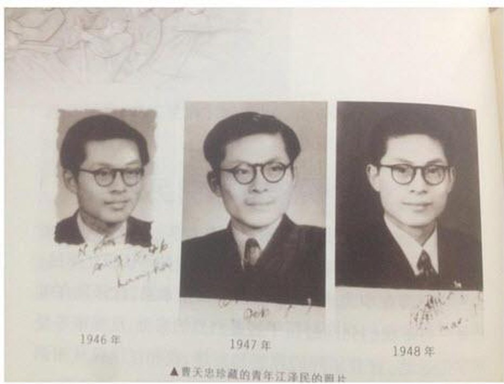
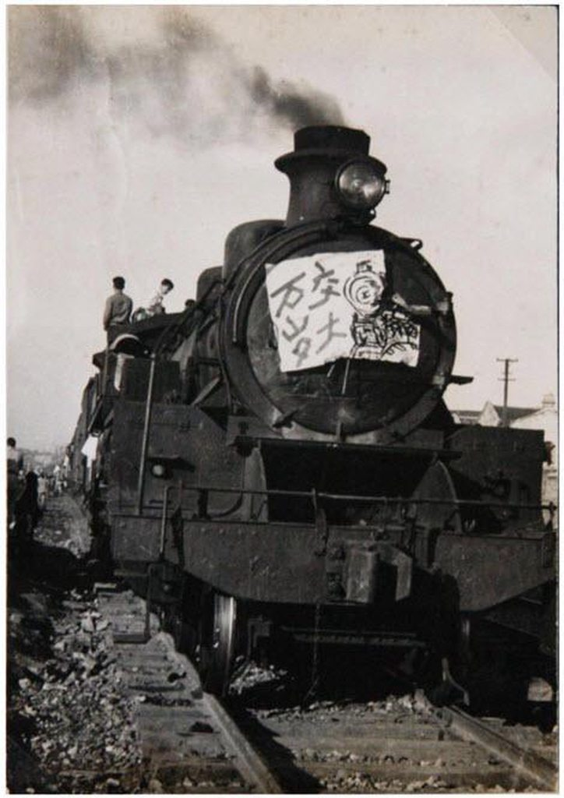
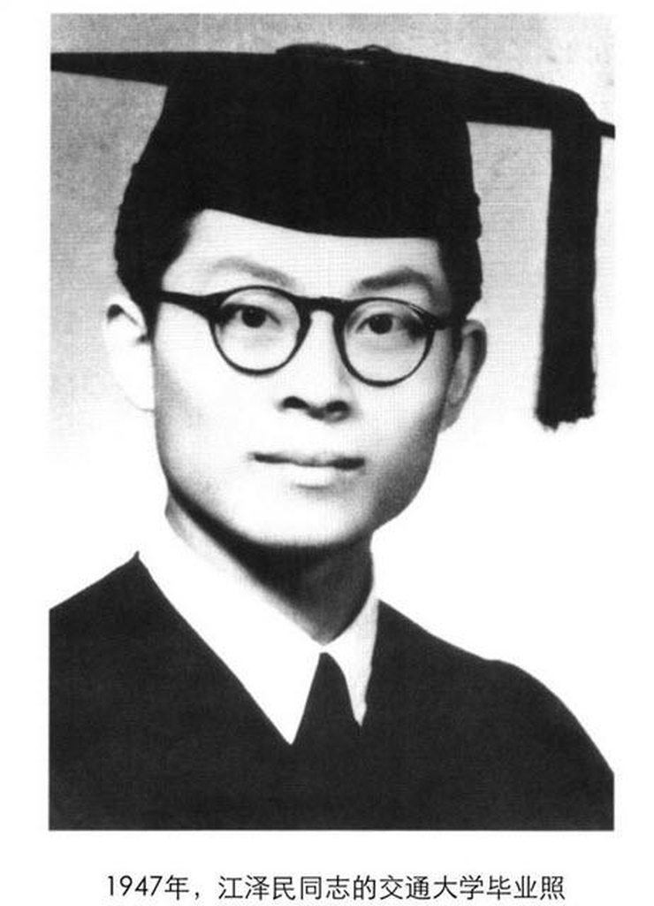
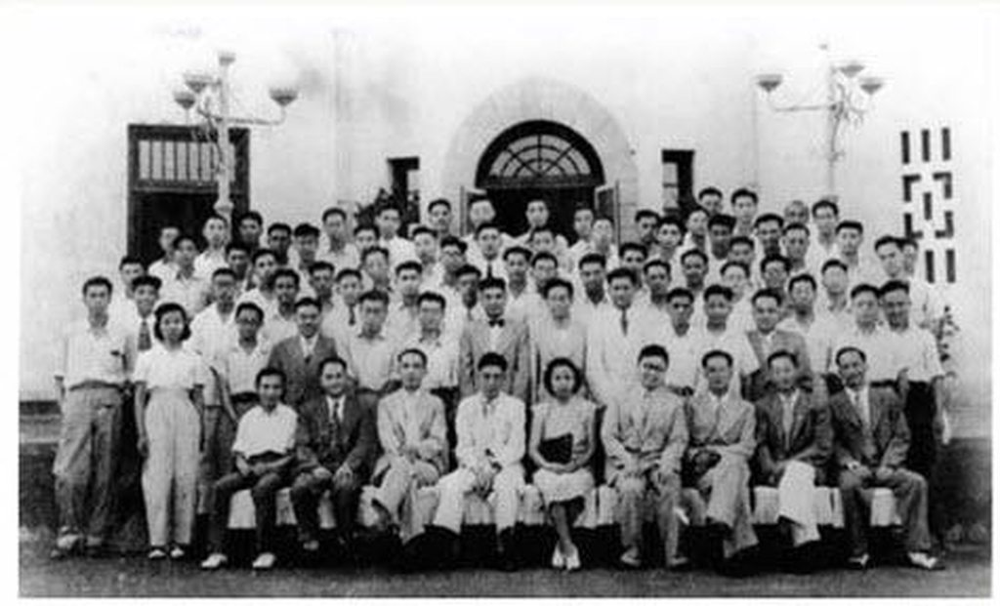
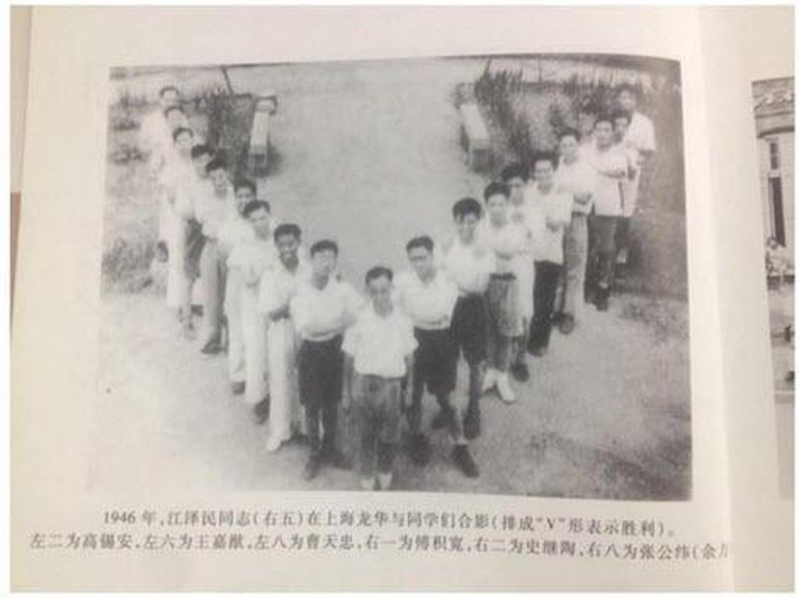
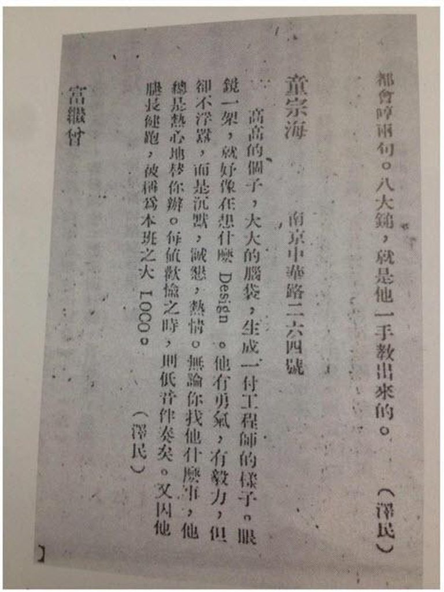
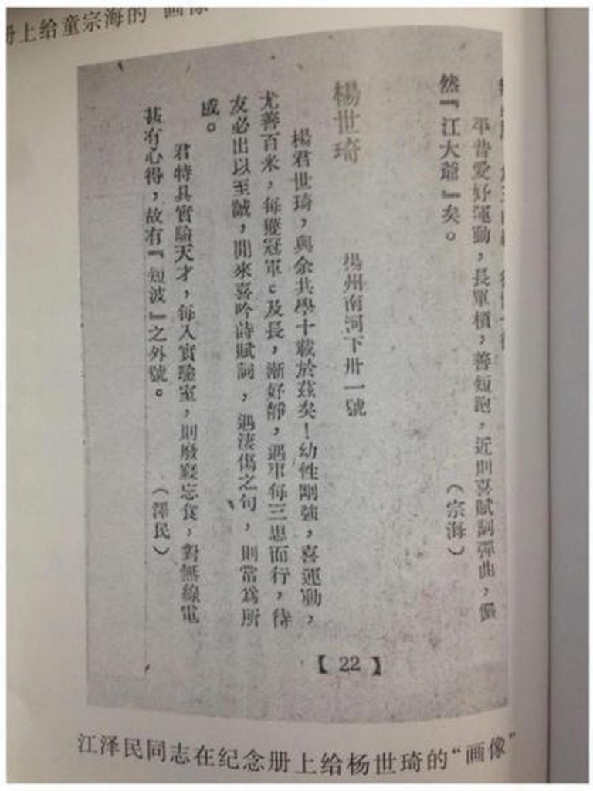
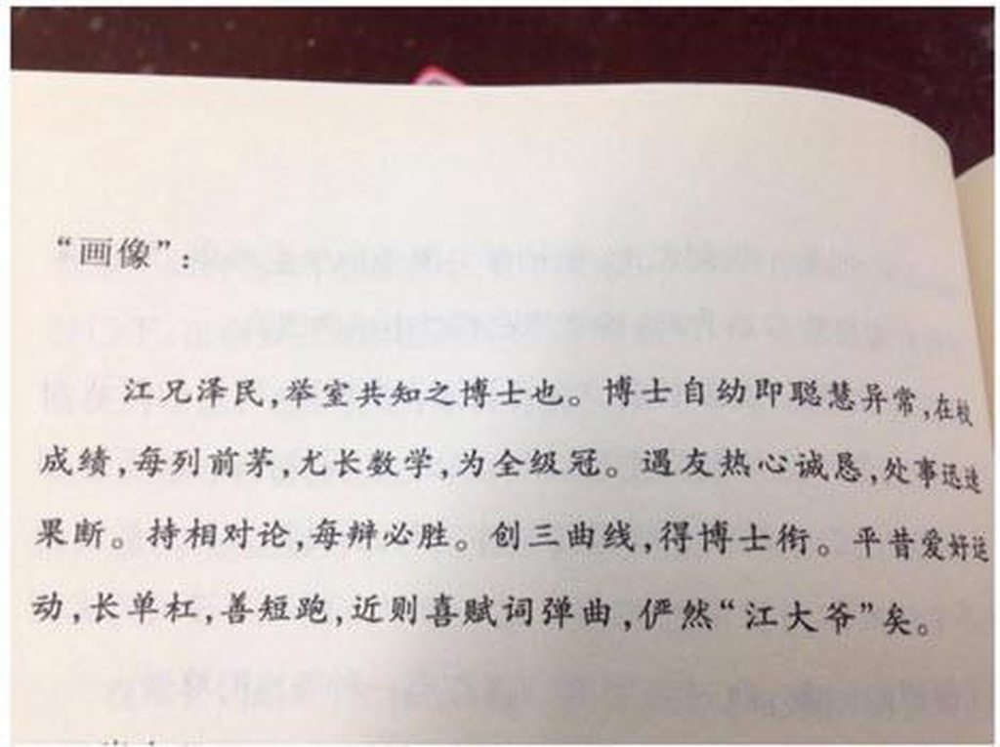

所有的故事，从夏天开始。故事得从45年的夏天说起，南京光复，沦陷时期的中央大学被拆散，江当时即将念大三，他所在的工学院整体并入了交大。彼时的交大牛逼闪闪，而后经过了52年专业拆分和55年西迁，才元气大伤。连长者的职业黑李锐都在其回忆录里谈到说，我高中毕业，到北京考大学，上海交通大学最难考，我根本不敢报，报考了清华，没有考上。

图为江 1946、1947、1948 三年在校照片
护校运动
在上海读了两年的江在47年5月即将迎来毕业，那是一个刚刚热起来不久的夏天，微风正好，阳光不燥。临近毕业，国统区学潮风起云涌，13日清晨5时，2800余名交大学子倾校而出，涌向了火车站，铁路官员不允许他们乘车，江所在的工学院发挥了巨大的作用，几位机械系的大四学生找到了一台老火车头，并把几节运货车厢连在火车头上开动起来，铁路局奉命拆除铁轨，又是工学院的土木系学生将路轨重新铺好。僵局持续到14日凌晨1时，时任教育部长朱家骅终于赶到现场，并与学生谈判成功。这是当年国统区少数学生赢得干净利落的胜利之一。

当时江所在工学院下设三个系：机械系、电力系和土木工程系，江选了前两个系的课，这两个系在交大排在最前。他主修发电和运输。我没有资料直接证明江参加了此次护校活动，但交大学生参加的广度和工学院大四生在运动中发挥的作用，并且5月15日交大学生赴南京谈判15名代表的名单中，发现了江的同学兼挚友张公纬等（张也是护校运动的总指挥），可以略加推测江起码是去围观了。
这是江的一贯态度，虽然其早在46年4月就入了党，但和他在解放后各项政治运动中一样，其是逍遥派，表现都不甚积极，或者说保持了小资产阶级特有的精明和冷静。入党的一年并未将其转化为狂热的马克思主义者，与同期的地下党员钱其琛和乔石不同，长者在学运中从未担任过领导职务，只利用自己的文艺才能做了一些宣传工作，人们时常看到他「在钢琴上敲打，附身二胡拉唱，或为抗议人群的高歌猛进做即兴指挥」，甚至江还为被抗议美军强奸北大女生的活动画出巨大的漫画招贴，这样的行为只能称作学运外围，后来江回忆那段时期的生活时，更愿意将运动说成是「革命」而不是「共产主义」，但这不能说明江没有危险，有一段轶事说江为躲避当局追捕，曾藏进交大校长吴保丰的车后箱中。
毕业照：

交大有个传统，每当学生毕业离校前夕，每个班级都要举行毕业联欢会，拍张集体毕业照。这张照片拍摄于1947年7月2日，从毕业照看，除去第一排坐着的老师外，只有第一排最左边有一位女生。(第三排右三是江)

长者多年以后还对交大女生的数量耿耿于怀，《江泽民与母校交通大学》里记载了这么一段，1987年11月，长者参加庆祝闵行新校区建成的庆祝活动，会后，在参观学生宿舍时，一群女学生围了过来，江与她们打招呼说「我们那时女学生很少，你们这些女孩子为什么要考交大、学理工专业？」一名学生回答「是爸妈让我考的」,长者听了蛤蛤大笑说「你真够诚实的」
除了正统的毕业集体照外，江也有一张有创意的毕业照，与现在的花式毕业照一样，下面这张也不算落伍。（V字型右边第五个是江）

大学生活
江的同学回忆，和普通学生一样，长者和他的室友喜欢聊天和播放音乐，直至深夜。当长者情绪低落时，他不会对他的室友倾诉。「通常，他会盘腿坐在自己的床上，读些悲凉的唐宋诗词。在大声朗读的时候，他时不时还会发出一些唏嘘感叹」，他的室友童宗海回忆说「不管心事多重，江都不会发泄或生气。他背诵古诗的时候，通常都会找一首特别能反映他心情的诗。在高兴的时候，他就会选一些欢快的诗。总的来说，他是一个乐观主义者」
闲暇时为了生活费，江课余时间会到上海青年会开办的夜校去教代数和三角学。他还给富家子弟做家教。当然，当时的江还经常光顾电影院，《乱世佳人》和《魂断蓝桥》奠定了其一生对好莱坞电影的痴迷。
唯一遗憾的是，江应该没有大学爱情故事，因为大学期间的长者臂力惊人。和以为的跳远或蛙泳不同，江在校期间擅长的却是短跑和单杠。江的同学曾介绍说，江会把寝室门框上的横梁当作单杠。并经常组织在同学之间开展引体向上比赛，而且每次江都能赢。「他不会拉到‘一大半’就算数，每拉一次，他都要尽力让自己的下巴越过横梁。在最佳状态时，他能做24个」。并且其妹也回忆说，「他伸开双臂，与地面约成45°，然后让我和姐姐一人抱住他的一只胳膊。我哥然后把我们两人吊了起来，直到他的手臂与地面平行」
毕业「画像」
毕业前夕，交大还有个特色节目，即同学之间互相画像，以做临别赠言。这种画像像「速写」，寥寥几笔既要勾勒出一个同学的性格特点、爱好特长，又要写的有趣，委实不是一件易事，对画像者的功力是一种考验。先看长者为其三位同学的”画像“
童宗海：高高的个子，大大的脑袋，生成一幅工程师的样子。眼镜一架，就好像在想什麽Design。他有勇气，有毅力，但却不浮嚣，而是沉默、诚恳，热情。无论你找他什麽事，他总是热心地替你辩。每值欢愉之时，则低音伴奏矣。又因他腿长健跑，被称为本班之大LOCO。

温鸿广：你若叫他温鸿广，他不会理你的，你非叫他Herr温。高高的额角，大大的眼珠，一个典型的广东人。而颊上，永远带著和蔼可亲的微笑，特别是一日难言三语。然而你别看他这麽冷静。不动则已，一动惊人。上了运动场，什麽都来得。闲来并喜欢操管弦。琴丝一拨，令人陶醉其中矣。

杨世琦：杨君世琦，与余共学十载于兹矣！幼性刚强，喜运动，尤擅百米，每获冠军，及长，渐好静，遇事每三思而行，待友必出以至诚。闲来喜吟诗赋词，遇凄伤之句，则当为所戚。君特具实验天才，每入实验室，则废寝忘食，对无线电甚有心得，固有短波之外号。

几篇速写，洗练干净，无抒情无官话，理工科男克制又闷骚的形象跃然纸上，并且三岁看大，江主席言语中夹杂英文的习惯早就有之。
对于江自己的画像，只找到长者室友为其画的一幅：

江兄泽民，举室共知之博士也。博士自幼即聪慧异常，在校成绩，每列前茅，尤长数学，为全级冠。遇友热心诚恳，处事迅速果断。持相对论，每辩必胜。创三曲线，得博士衔。平昔爱好运动，长单杠，善短跑，近则喜赋词弹曲，俨然“江大爷”矣。这张画像的作者童宗海后来解释到，当年他们同学经常在宿舍里一起聊天、辩论。对一些问题有不同看法，大家就辩论。持相对论是指江辩论的特点，他能将对方观点归纳成一二三四五条，将自己观点也归纳出一二三四五条，然后用自己观点一条一条驳倒对方的观点。这样，你的优缺点在哪里，自己的优缺点在哪里，一清二楚。如此辩论，驳得对方心服口服，确实高出一筹。
何谓三曲线呢，童讲到长者喜欢数学，爱好想象。双曲线从遥远处而来，快到原点时又跑开了，奔向遥远处而去，就像牛郎织女一样无法相会，原因就是被原点隔开了。他整整思考了两天，恍然大悟：双曲线在平面上不可能相会，但从立体的、三维空间的角度来看是可以相会的，由此戏称为“三曲线”。同学们十分佩服，称他为“江博士。
《毕业歌》与「青春万岁」
凤凰花开，骊歌响起的日子里，在属于江的毕业歌单里，《毕业歌》最为江所钟情，这首1931年田汉聂耳合作的，以九一八事件为背景的歌，成为串起长者峥嵘岁月的莫比乌斯环。听懂这首歌，我们或许能更好地理解长者。
43年在南京，刚入学的17岁的长者参加了清毒运动，在国民大会堂广场焚烧收集的鸦片、毒品和烟具，长者与一起游行的队伍围着熊熊的篝火，齐声高唱“毕业歌：
同学们，大家起来，
担负起天下的兴亡！
听吧，
满耳是大众的嗟伤，
看吧，
一年年国土的沦丧！
同学们，大家起来……
歌词的最后一句是，“我们是要选择‘战’还是‘降’？我们要做主人，去拼死在疆场。”
许多年来，江主席在很多场合都唱过这首歌，包括他在会见美国前总统卡特时，00年在接受哥伦比亚广播公司《60分钟》节目的采访时，他甚至对着华莱士把《毕业歌》演绎了一遍。
99年，在纪念五四运动八十周年的文艺晚会结束后，长者走上舞台发表了即席讲话，他说「今晚听了你们嘹亮的歌声，铿锵的朗诵，使我们回想起青年时代的战斗岁月，你们的歌声和朗诵，跳动着时代的脉搏，憧憬着美好的未来，未来是属于青年的，青春万岁!」随后，江带着一众常委同声高唱《毕业歌》。
2年后第七次全国文代会、第六次全国作代会举办联欢晚会，中南海天团再次在长者铿锵有力的指挥下，再次合唱了《毕业歌》。在歌声里，长者永远是那个热血的少年。

很多年后，长者会怀念起毕业那年的夏天，午后操场响起安静的广播，盖着被子开着窗，那宿舍里的录音机，也天天放着爱你爱你，时局不定却又满是机会，没完没了的热闹，猝不及防的炙热的暴雨里，我们能看到他从远方走近，一个喜欢穿着亚麻长裤的理工科男生，怀揣着工程学士文凭，干干净净地，笑眯眯地，走出了校门，化成了一杆温柔的枪。

本文转载自《江选研讨会》，版权归作者所有，如有疑问请联系本站。